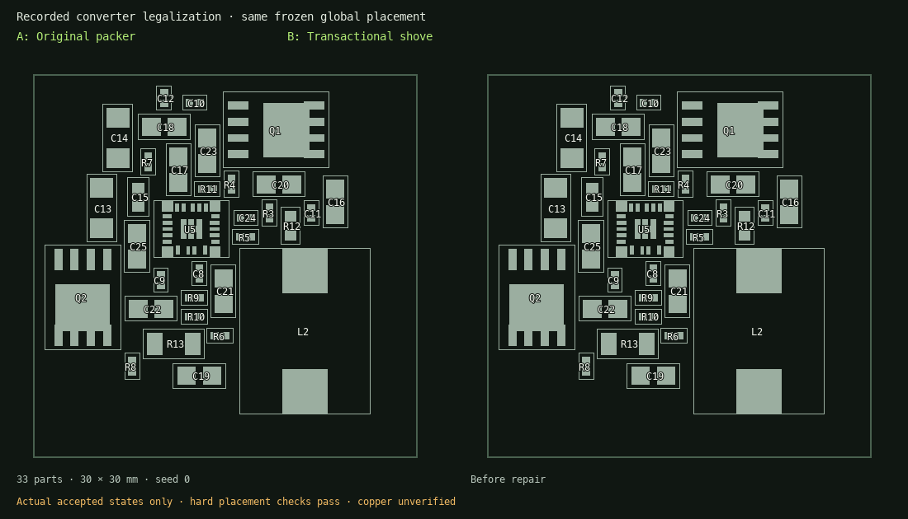

Transactional placement shove and capacitor banks¶
Current activation policy and combined regression results are tracked in PR #100 defaults. The measurements below retain their original experiment configuration.
The sequential legalizer can strand a late component even when small translations of earlier neighbours would leave a much better placement. A local rotation can also win its own slot comparison while taking space needed by another component.
PNR_LEGALIZE_SHOVE=1 enables a repair pass after ordinary legalization. It compares
proposals against the original continuous-placement targets, with three bounded
passes, a deterministic beam of twelve states and at most eight contact levels.
Neighbour translations are limited to 4 mm per transaction. No random selection or
machine-speed-dependent stopping participates in this search.
Each proposal moves an incoming component toward its target and propagates collisions to neighbouring components. The complete transaction must reduce the whole-board sum of squared target displacement, rotation-change cost, pad-locality cost, channel-shortage cost and authored soft spatial constraints. A quarter-turn costs the square of the component’s largest courtyard dimension. The incoming component can recover its original rotation; neighbours retain their rotations and sides. This objective is distinct from the global optimizer’s live expression.
The pose checker and independent full hard-constraint checker must accept the complete result. Fixed and locked components, rigid macros, rows, alignment groups and landing-reserve components remain held. Hard group relations are rechecked for both moved anchors and their members. A failed proposal restores all poses. The search is bounded and does not establish optimality or routing success.

The animation contains only accepted engine states. Its manifest binds the inputs, decisions and images by SHA-256.
Laboratory and evidence¶
The lab exposes Experimental shove repair, Authored capacitor banks, and Legalize source poses only on new runs. The latter consumes the registered source’s exact poses, performs zero optimizer updates, and supports isolated legalization A/B replay. It cannot run paused or indefinitely.
Shove decisions follow the original packer decisions in the review sequence. Each
has an immutable before graph, all changed poses, original global target and
aggregate before/after cost decomposition. Amber outlines and green placements
show every affected component, and airwires use every accepted pose. Notes attach
to the transaction’s content hash, as they do for individual packing decisions.
The Python/HTTP/CLI APIs expose shove, placement_banks and legalize_only on
start; CLI equivalents are --shove, --placement-banks, --legalize-only.
Initial measured replay¶
A 33-part converter was re-legalized from the same frozen continuous placement, 0.25 mm grid, original constraints, pad-locality and channel model:
Measure |
Original packer |
Shove |
|---|---|---|
Total translation from global poses |
46.911 mm |
37.199 mm |
Maximum translation |
9.633 mm |
3.578 mm |
Rotation changes |
2 |
0 |
C9 displacement |
2.011 mm |
0.961 mm |
C10 displacement |
7.260 mm |
1.835 mm |
C12 displacement |
9.633 mm |
1.443 mm |
R8 displacement |
7.173 mm |
1.267 mm |
R7 displacement |
2.025 mm |
2.025 mm |
The candidate accepted 31 transactions. All hard placement checks passed; R7 did not improve. The new search took about 34.5 seconds versus 0.4 seconds for packing alone on this run. This is placement evidence, not native copper DRC or electrical qualification. The experimental flags remain off by default.
A separate seed-0, 400-iteration global A/B used the same fixed objective and source poses. Enabling the authored output bank reduced its final pairwise span from 20.08 mm to the declared 9.00 mm; the input bank ended at 2.92 mm within its 6 mm bound. This needed a stronger bank penalty (weight 20). Weight 4 left the continuous bank too scattered and bounded legalization failed, rather than silently relaxing the 9 mm constraint. All hard placement checks passed on the weight-20 candidate. It still had an 8.17 mm worst legalization move and three rotation changes elsewhere; compact banks are not yet a demonstrated overall routing improvement. The same frozen annotated placement above isolates shove without changing bank intent or global optimization.
Why changing the overlap centroid is insufficient¶
The current global overlap term sums pairwise overlap area. Opposing derivatives can cancel for an interior component. In symmetric chains of 3, 7 and 15 unit parts spaced 0.6 units apart, the middle component has zero overlap gradient in all three cases; the outer component’s gradient magnitude stays one. Multiplying the overlap weight or changing the cluster’s reference point cannot remove that symmetry. It is also correct for the middle component to stay centred if its neighbours can move outward.
The existing contact-separation solver clears those three synthetic chains by
propagating spacing constraints, to within 1e-6 per contact. This supports testing a
contact projection or contact-pressure method in global optimization. It does not
establish that such a method improves general boards. This patch leaves the live
spread_overlap objective and its gradients unchanged.
Native routing follow-up¶
The same frozen baseline and shove placements were routed with one worker, 60-second signal budgets, identical native phases and headless KiCad. Both used the packed maze fallback available in this runtime. There were zero native DRC geometric violations in either final artifact, but neither completed routing:
Final artifact |
Unconnected |
Subwidth tracks |
|---|---|---|
Baseline |
17 |
47 |
Shove |
19 |
32 |
Shove reduces width findings but regresses connectivity in this bounded probe. It is not evidence for enabling a default or claiming convergence. The SMPS screens find further defects in both boards. All measurements and hashes include the separate six-case converter power-placement study; power-first helps both seeds, while compact bank grouping has mixed effects. Those power placements have not yet been natively routed.